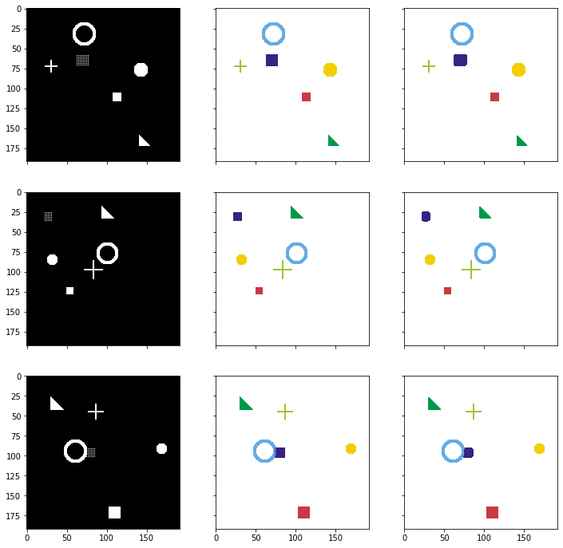

Lecture 4: CNNs for Segmentation Code
Contents

Lecture 4: CNNs for Segmentation Code #
#@title
from ipywidgets import widgets
out1 = widgets.Output()
with out1:
from IPython.display import YouTubeVideo
video = YouTubeVideo(id=f"4zuAYazbCQ0", width=854, height=480, fs=1, rel=0)
print("Video available at https://youtube.com/watch?v=" + video.id)
display(video)
display(out1)
#@title
from IPython import display as IPyDisplay
IPyDisplay.HTML(
f"""
<div>
<a href= "https://github.com/DL4CV-NPTEL/Deep-Learning-For-Computer-Vision/blob/main/Slides/Week_7/DL4CV_Week07_Part03.pdf" target="_blank">
<img src="https://github.com/DL4CV-NPTEL/Deep-Learning-For-Computer-Vision/blob/main/Data/Slides_Logo.png?raw=1"
alt="button link to Airtable" style="width:200px"></a>
</div>""" )
Enabling GPU on Colab#
Need to enable GPU from Notebook settings
Navigate to Edit-Notebook settings menu
Select GPU from the Hardware Accelerator dropdown list
import torch
if not torch.cuda.is_available():
raise Exception("GPU not availalbe. CPU training will be too slow.")
print("device name", torch.cuda.get_device_name(0))
device name Tesla T4
Helper functions#
import matplotlib.pyplot as plt
import numpy as np
def plot_img_array(img_array, ncol=3):
nrow = len(img_array) // ncol
f, plots = plt.subplots(nrow, ncol, sharex='all', sharey='all', figsize=(ncol * 4, nrow * 4))
for i in range(len(img_array)):
plots[i // ncol, i % ncol]
plots[i // ncol, i % ncol].imshow(img_array[i])
from functools import reduce
def plot_side_by_side(img_arrays):
flatten_list = reduce(lambda x,y: x+y, zip(*img_arrays))
plot_img_array(np.array(flatten_list), ncol=len(img_arrays))
import itertools
def plot_errors(results_dict, title):
markers = itertools.cycle(('+', 'x', 'o'))
plt.title('{}'.format(title))
for label, result in sorted(results_dict.items()):
plt.plot(result, marker=next(markers), label=label)
plt.ylabel('dice_coef')
plt.xlabel('epoch')
plt.legend(loc=3, bbox_to_anchor=(1, 0))
plt.show()
def masks_to_colorimg(masks):
colors = np.asarray([(201, 58, 64), (242, 207, 1), (0, 152, 75), (101, 172, 228),(56, 34, 132), (160, 194, 56)])
colorimg = np.ones((masks.shape[1], masks.shape[2], 3), dtype=np.float32) * 255
channels, height, width = masks.shape
for y in range(height):
for x in range(width):
selected_colors = colors[masks[:,y,x] > 0.5]
if len(selected_colors) > 0:
colorimg[y,x,:] = np.mean(selected_colors, axis=0)
return colorimg.astype(np.uint8)
Simulate data#
import numpy as np
import random
def generate_random_data(height, width, count):
x, y = zip(*[generate_img_and_mask(height, width) for i in range(0, count)])
X = np.asarray(x) * 255
X = X.repeat(3, axis=1).transpose([0, 2, 3, 1]).astype(np.uint8)
Y = np.asarray(y)
return X, Y
def generate_img_and_mask(height, width):
shape = (height, width)
triangle_location = get_random_location(*shape)
circle_location1 = get_random_location(*shape, zoom=0.7)
circle_location2 = get_random_location(*shape, zoom=0.5)
mesh_location = get_random_location(*shape)
square_location = get_random_location(*shape, zoom=0.8)
plus_location = get_random_location(*shape, zoom=1.2)
# Create input image
arr = np.zeros(shape, dtype=bool)
arr = add_triangle(arr, *triangle_location)
arr = add_circle(arr, *circle_location1)
arr = add_circle(arr, *circle_location2, fill=True)
arr = add_mesh_square(arr, *mesh_location)
arr = add_filled_square(arr, *square_location)
arr = add_plus(arr, *plus_location)
arr = np.reshape(arr, (1, height, width)).astype(np.float32)
# Create target masks
masks = np.asarray([
add_filled_square(np.zeros(shape, dtype=bool), *square_location),
add_circle(np.zeros(shape, dtype=bool), *circle_location2, fill=True),
add_triangle(np.zeros(shape, dtype=bool), *triangle_location),
add_circle(np.zeros(shape, dtype=bool), *circle_location1),
add_filled_square(np.zeros(shape, dtype=bool), *mesh_location),
# add_mesh_square(np.zeros(shape, dtype=bool), *mesh_location),
add_plus(np.zeros(shape, dtype=bool), *plus_location)
]).astype(np.float32)
return arr, masks
def add_square(arr, x, y, size):
s = int(size / 2)
arr[x-s,y-s:y+s] = True
arr[x+s,y-s:y+s] = True
arr[x-s:x+s,y-s] = True
arr[x-s:x+s,y+s] = True
return arr
def add_filled_square(arr, x, y, size):
s = int(size / 2)
xx, yy = np.mgrid[:arr.shape[0], :arr.shape[1]]
return np.logical_or(arr, logical_and([xx > x - s, xx < x + s, yy > y - s, yy < y + s]))
def logical_and(arrays):
new_array = np.ones(arrays[0].shape, dtype=bool)
for a in arrays:
new_array = np.logical_and(new_array, a)
return new_array
def add_mesh_square(arr, x, y, size):
s = int(size / 2)
xx, yy = np.mgrid[:arr.shape[0], :arr.shape[1]]
return np.logical_or(arr, logical_and([xx > x - s, xx < x + s, xx % 2 == 1, yy > y - s, yy < y + s, yy % 2 == 1]))
def add_triangle(arr, x, y, size):
s = int(size / 2)
triangle = np.tril(np.ones((size, size), dtype=bool))
arr[x-s:x-s+triangle.shape[0],y-s:y-s+triangle.shape[1]] = triangle
return arr
def add_circle(arr, x, y, size, fill=False):
xx, yy = np.mgrid[:arr.shape[0], :arr.shape[1]]
circle = np.sqrt((xx - x) ** 2 + (yy - y) ** 2)
new_arr = np.logical_or(arr, np.logical_and(circle < size, circle >= size * 0.7 if not fill else True))
return new_arr
def add_plus(arr, x, y, size):
s = int(size / 2)
arr[x-1:x+1,y-s:y+s] = True
arr[x-s:x+s,y-1:y+1] = True
return arr
def get_random_location(width, height, zoom=1.0):
x = int(width * random.uniform(0.1, 0.9))
y = int(height * random.uniform(0.1, 0.9))
size = int(min(width, height) * random.uniform(0.06, 0.12) * zoom)
return (x, y, size)
Synthetic images for demo training#
import matplotlib.pyplot as plt
import numpy as np
# Generate some random images
input_images, target_masks = generate_random_data(192, 192, count=3)
print("input_images shape and range", input_images.shape, input_images.min(), input_images.max())
print("target_masks shape and range", target_masks.shape, target_masks.min(), target_masks.max())
# Change channel-order and make 3 channels for matplot
input_images_rgb = [x.astype(np.uint8) for x in input_images]
# Map each channel (i.e. class) to each color
target_masks_rgb = [masks_to_colorimg(x) for x in target_masks]
input_images shape and range (3, 192, 192, 3) 0 255
target_masks shape and range (3, 6, 192, 192) 0.0 1.0
Left: Input image (black and white), Right: Target mask (6ch)#
plot_side_by_side([input_images_rgb, target_masks_rgb])
Prepare Dataset and DataLoader#
from torch.utils.data import Dataset, DataLoader
from torchvision import transforms, datasets, models
class SimDataset(Dataset):
def __init__(self, count, transform=None):
self.input_images, self.target_masks = generate_random_data(192, 192, count=count)
self.transform = transform
def __len__(self):
return len(self.input_images)
def __getitem__(self, idx):
image = self.input_images[idx]
mask = self.target_masks[idx]
if self.transform:
image = self.transform(image)
return [image, mask]
# use the same transformations for train/val in this example
trans = transforms.Compose([
transforms.ToTensor(),
transforms.Normalize([0.485, 0.456, 0.406], [0.229, 0.224, 0.225]) # imagenet
])
train_set = SimDataset(2000, transform = trans)
val_set = SimDataset(200, transform = trans)
image_datasets = {
'train': train_set, 'val': val_set
}
batch_size = 25
dataloaders = {
'train': DataLoader(train_set, batch_size=batch_size, shuffle=True, num_workers=0),
'val': DataLoader(val_set, batch_size=batch_size, shuffle=True, num_workers=0)
}
Check the outputs from DataLoader#
import torchvision.utils
def reverse_transform(inp):
inp = inp.numpy().transpose((1, 2, 0))
mean = np.array([0.485, 0.456, 0.406])
std = np.array([0.229, 0.224, 0.225])
inp = std * inp + mean
inp = np.clip(inp, 0, 1)
inp = (inp * 255).astype(np.uint8)
return inp
# Get a batch of training data
inputs, masks = next(iter(dataloaders['train']))
print(inputs.shape, masks.shape)
plt.imshow(reverse_transform(inputs[3]))
torch.Size([25, 3, 192, 192]) torch.Size([25, 6, 192, 192])
<matplotlib.image.AxesImage at 0x7f9bb5b9d110>
Define a UNet module#
import torch.nn as nn
import torchvision.models
def convrelu(in_channels, out_channels, kernel, padding):
return nn.Sequential(
nn.Conv2d(in_channels, out_channels, kernel, padding=padding),
nn.ReLU(inplace=True),
)
class ResNetUNet(nn.Module):
def __init__(self, n_class):
super().__init__()
self.base_model = torchvision.models.resnet18(pretrained=True)
self.base_layers = list(self.base_model.children())
self.layer0 = nn.Sequential(*self.base_layers[:3]) # size=(N, 64, x.H/2, x.W/2)
self.layer0_1x1 = convrelu(64, 64, 1, 0)
self.layer1 = nn.Sequential(*self.base_layers[3:5]) # size=(N, 64, x.H/4, x.W/4)
self.layer1_1x1 = convrelu(64, 64, 1, 0)
self.layer2 = self.base_layers[5] # size=(N, 128, x.H/8, x.W/8)
self.layer2_1x1 = convrelu(128, 128, 1, 0)
self.layer3 = self.base_layers[6] # size=(N, 256, x.H/16, x.W/16)
self.layer3_1x1 = convrelu(256, 256, 1, 0)
self.layer4 = self.base_layers[7] # size=(N, 512, x.H/32, x.W/32)
self.layer4_1x1 = convrelu(512, 512, 1, 0)
self.upsample = nn.Upsample(scale_factor=2, mode='bilinear', align_corners=True)
self.conv_up3 = convrelu(256 + 512, 512, 3, 1)
self.conv_up2 = convrelu(128 + 512, 256, 3, 1)
self.conv_up1 = convrelu(64 + 256, 256, 3, 1)
self.conv_up0 = convrelu(64 + 256, 128, 3, 1)
self.conv_original_size0 = convrelu(3, 64, 3, 1)
self.conv_original_size1 = convrelu(64, 64, 3, 1)
self.conv_original_size2 = convrelu(64 + 128, 64, 3, 1)
self.conv_last = nn.Conv2d(64, n_class, 1)
def forward(self, input):
x_original = self.conv_original_size0(input)
x_original = self.conv_original_size1(x_original)
layer0 = self.layer0(input)
layer1 = self.layer1(layer0)
layer2 = self.layer2(layer1)
layer3 = self.layer3(layer2)
layer4 = self.layer4(layer3)
layer4 = self.layer4_1x1(layer4)
x = self.upsample(layer4)
layer3 = self.layer3_1x1(layer3)
x = torch.cat([x, layer3], dim=1)
x = self.conv_up3(x)
x = self.upsample(x)
layer2 = self.layer2_1x1(layer2)
x = torch.cat([x, layer2], dim=1)
x = self.conv_up2(x)
x = self.upsample(x)
layer1 = self.layer1_1x1(layer1)
x = torch.cat([x, layer1], dim=1)
x = self.conv_up1(x)
x = self.upsample(x)
layer0 = self.layer0_1x1(layer0)
x = torch.cat([x, layer0], dim=1)
x = self.conv_up0(x)
x = self.upsample(x)
x = torch.cat([x, x_original], dim=1)
x = self.conv_original_size2(x)
out = self.conv_last(x)
return out
Instantiate the UNet model#
Move the model to GPU if available
Show model summaries
import torch
import torch.nn as nn
device = torch.device('cuda' if torch.cuda.is_available() else 'cpu')
print('device', device)
model = ResNetUNet(6)
model = model.to(device)
device cuda
/usr/local/lib/python3.7/dist-packages/torchvision/models/_utils.py:209: UserWarning: The parameter 'pretrained' is deprecated since 0.13 and will be removed in 0.15, please use 'weights' instead.
f"The parameter '{pretrained_param}' is deprecated since 0.13 and will be removed in 0.15, "
/usr/local/lib/python3.7/dist-packages/torchvision/models/_utils.py:223: UserWarning: Arguments other than a weight enum or `None` for 'weights' are deprecated since 0.13 and will be removed in 0.15. The current behavior is equivalent to passing `weights=ResNet18_Weights.IMAGENET1K_V1`. You can also use `weights=ResNet18_Weights.DEFAULT` to get the most up-to-date weights.
warnings.warn(msg)
Downloading: "https://download.pytorch.org/models/resnet18-f37072fd.pth" to /root/.cache/torch/hub/checkpoints/resnet18-f37072fd.pth
model
ResNetUNet(
(base_model): ResNet(
(conv1): Conv2d(3, 64, kernel_size=(7, 7), stride=(2, 2), padding=(3, 3), bias=False)
(bn1): BatchNorm2d(64, eps=1e-05, momentum=0.1, affine=True, track_running_stats=True)
(relu): ReLU(inplace=True)
(maxpool): MaxPool2d(kernel_size=3, stride=2, padding=1, dilation=1, ceil_mode=False)
(layer1): Sequential(
(0): BasicBlock(
(conv1): Conv2d(64, 64, kernel_size=(3, 3), stride=(1, 1), padding=(1, 1), bias=False)
(bn1): BatchNorm2d(64, eps=1e-05, momentum=0.1, affine=True, track_running_stats=True)
(relu): ReLU(inplace=True)
(conv2): Conv2d(64, 64, kernel_size=(3, 3), stride=(1, 1), padding=(1, 1), bias=False)
(bn2): BatchNorm2d(64, eps=1e-05, momentum=0.1, affine=True, track_running_stats=True)
)
(1): BasicBlock(
(conv1): Conv2d(64, 64, kernel_size=(3, 3), stride=(1, 1), padding=(1, 1), bias=False)
(bn1): BatchNorm2d(64, eps=1e-05, momentum=0.1, affine=True, track_running_stats=True)
(relu): ReLU(inplace=True)
(conv2): Conv2d(64, 64, kernel_size=(3, 3), stride=(1, 1), padding=(1, 1), bias=False)
(bn2): BatchNorm2d(64, eps=1e-05, momentum=0.1, affine=True, track_running_stats=True)
)
)
(layer2): Sequential(
(0): BasicBlock(
(conv1): Conv2d(64, 128, kernel_size=(3, 3), stride=(2, 2), padding=(1, 1), bias=False)
(bn1): BatchNorm2d(128, eps=1e-05, momentum=0.1, affine=True, track_running_stats=True)
(relu): ReLU(inplace=True)
(conv2): Conv2d(128, 128, kernel_size=(3, 3), stride=(1, 1), padding=(1, 1), bias=False)
(bn2): BatchNorm2d(128, eps=1e-05, momentum=0.1, affine=True, track_running_stats=True)
(downsample): Sequential(
(0): Conv2d(64, 128, kernel_size=(1, 1), stride=(2, 2), bias=False)
(1): BatchNorm2d(128, eps=1e-05, momentum=0.1, affine=True, track_running_stats=True)
)
)
(1): BasicBlock(
(conv1): Conv2d(128, 128, kernel_size=(3, 3), stride=(1, 1), padding=(1, 1), bias=False)
(bn1): BatchNorm2d(128, eps=1e-05, momentum=0.1, affine=True, track_running_stats=True)
(relu): ReLU(inplace=True)
(conv2): Conv2d(128, 128, kernel_size=(3, 3), stride=(1, 1), padding=(1, 1), bias=False)
(bn2): BatchNorm2d(128, eps=1e-05, momentum=0.1, affine=True, track_running_stats=True)
)
)
(layer3): Sequential(
(0): BasicBlock(
(conv1): Conv2d(128, 256, kernel_size=(3, 3), stride=(2, 2), padding=(1, 1), bias=False)
(bn1): BatchNorm2d(256, eps=1e-05, momentum=0.1, affine=True, track_running_stats=True)
(relu): ReLU(inplace=True)
(conv2): Conv2d(256, 256, kernel_size=(3, 3), stride=(1, 1), padding=(1, 1), bias=False)
(bn2): BatchNorm2d(256, eps=1e-05, momentum=0.1, affine=True, track_running_stats=True)
(downsample): Sequential(
(0): Conv2d(128, 256, kernel_size=(1, 1), stride=(2, 2), bias=False)
(1): BatchNorm2d(256, eps=1e-05, momentum=0.1, affine=True, track_running_stats=True)
)
)
(1): BasicBlock(
(conv1): Conv2d(256, 256, kernel_size=(3, 3), stride=(1, 1), padding=(1, 1), bias=False)
(bn1): BatchNorm2d(256, eps=1e-05, momentum=0.1, affine=True, track_running_stats=True)
(relu): ReLU(inplace=True)
(conv2): Conv2d(256, 256, kernel_size=(3, 3), stride=(1, 1), padding=(1, 1), bias=False)
(bn2): BatchNorm2d(256, eps=1e-05, momentum=0.1, affine=True, track_running_stats=True)
)
)
(layer4): Sequential(
(0): BasicBlock(
(conv1): Conv2d(256, 512, kernel_size=(3, 3), stride=(2, 2), padding=(1, 1), bias=False)
(bn1): BatchNorm2d(512, eps=1e-05, momentum=0.1, affine=True, track_running_stats=True)
(relu): ReLU(inplace=True)
(conv2): Conv2d(512, 512, kernel_size=(3, 3), stride=(1, 1), padding=(1, 1), bias=False)
(bn2): BatchNorm2d(512, eps=1e-05, momentum=0.1, affine=True, track_running_stats=True)
(downsample): Sequential(
(0): Conv2d(256, 512, kernel_size=(1, 1), stride=(2, 2), bias=False)
(1): BatchNorm2d(512, eps=1e-05, momentum=0.1, affine=True, track_running_stats=True)
)
)
(1): BasicBlock(
(conv1): Conv2d(512, 512, kernel_size=(3, 3), stride=(1, 1), padding=(1, 1), bias=False)
(bn1): BatchNorm2d(512, eps=1e-05, momentum=0.1, affine=True, track_running_stats=True)
(relu): ReLU(inplace=True)
(conv2): Conv2d(512, 512, kernel_size=(3, 3), stride=(1, 1), padding=(1, 1), bias=False)
(bn2): BatchNorm2d(512, eps=1e-05, momentum=0.1, affine=True, track_running_stats=True)
)
)
(avgpool): AdaptiveAvgPool2d(output_size=(1, 1))
(fc): Linear(in_features=512, out_features=1000, bias=True)
)
(layer0): Sequential(
(0): Conv2d(3, 64, kernel_size=(7, 7), stride=(2, 2), padding=(3, 3), bias=False)
(1): BatchNorm2d(64, eps=1e-05, momentum=0.1, affine=True, track_running_stats=True)
(2): ReLU(inplace=True)
)
(layer0_1x1): Sequential(
(0): Conv2d(64, 64, kernel_size=(1, 1), stride=(1, 1))
(1): ReLU(inplace=True)
)
(layer1): Sequential(
(0): MaxPool2d(kernel_size=3, stride=2, padding=1, dilation=1, ceil_mode=False)
(1): Sequential(
(0): BasicBlock(
(conv1): Conv2d(64, 64, kernel_size=(3, 3), stride=(1, 1), padding=(1, 1), bias=False)
(bn1): BatchNorm2d(64, eps=1e-05, momentum=0.1, affine=True, track_running_stats=True)
(relu): ReLU(inplace=True)
(conv2): Conv2d(64, 64, kernel_size=(3, 3), stride=(1, 1), padding=(1, 1), bias=False)
(bn2): BatchNorm2d(64, eps=1e-05, momentum=0.1, affine=True, track_running_stats=True)
)
(1): BasicBlock(
(conv1): Conv2d(64, 64, kernel_size=(3, 3), stride=(1, 1), padding=(1, 1), bias=False)
(bn1): BatchNorm2d(64, eps=1e-05, momentum=0.1, affine=True, track_running_stats=True)
(relu): ReLU(inplace=True)
(conv2): Conv2d(64, 64, kernel_size=(3, 3), stride=(1, 1), padding=(1, 1), bias=False)
(bn2): BatchNorm2d(64, eps=1e-05, momentum=0.1, affine=True, track_running_stats=True)
)
)
)
(layer1_1x1): Sequential(
(0): Conv2d(64, 64, kernel_size=(1, 1), stride=(1, 1))
(1): ReLU(inplace=True)
)
(layer2): Sequential(
(0): BasicBlock(
(conv1): Conv2d(64, 128, kernel_size=(3, 3), stride=(2, 2), padding=(1, 1), bias=False)
(bn1): BatchNorm2d(128, eps=1e-05, momentum=0.1, affine=True, track_running_stats=True)
(relu): ReLU(inplace=True)
(conv2): Conv2d(128, 128, kernel_size=(3, 3), stride=(1, 1), padding=(1, 1), bias=False)
(bn2): BatchNorm2d(128, eps=1e-05, momentum=0.1, affine=True, track_running_stats=True)
(downsample): Sequential(
(0): Conv2d(64, 128, kernel_size=(1, 1), stride=(2, 2), bias=False)
(1): BatchNorm2d(128, eps=1e-05, momentum=0.1, affine=True, track_running_stats=True)
)
)
(1): BasicBlock(
(conv1): Conv2d(128, 128, kernel_size=(3, 3), stride=(1, 1), padding=(1, 1), bias=False)
(bn1): BatchNorm2d(128, eps=1e-05, momentum=0.1, affine=True, track_running_stats=True)
(relu): ReLU(inplace=True)
(conv2): Conv2d(128, 128, kernel_size=(3, 3), stride=(1, 1), padding=(1, 1), bias=False)
(bn2): BatchNorm2d(128, eps=1e-05, momentum=0.1, affine=True, track_running_stats=True)
)
)
(layer2_1x1): Sequential(
(0): Conv2d(128, 128, kernel_size=(1, 1), stride=(1, 1))
(1): ReLU(inplace=True)
)
(layer3): Sequential(
(0): BasicBlock(
(conv1): Conv2d(128, 256, kernel_size=(3, 3), stride=(2, 2), padding=(1, 1), bias=False)
(bn1): BatchNorm2d(256, eps=1e-05, momentum=0.1, affine=True, track_running_stats=True)
(relu): ReLU(inplace=True)
(conv2): Conv2d(256, 256, kernel_size=(3, 3), stride=(1, 1), padding=(1, 1), bias=False)
(bn2): BatchNorm2d(256, eps=1e-05, momentum=0.1, affine=True, track_running_stats=True)
(downsample): Sequential(
(0): Conv2d(128, 256, kernel_size=(1, 1), stride=(2, 2), bias=False)
(1): BatchNorm2d(256, eps=1e-05, momentum=0.1, affine=True, track_running_stats=True)
)
)
(1): BasicBlock(
(conv1): Conv2d(256, 256, kernel_size=(3, 3), stride=(1, 1), padding=(1, 1), bias=False)
(bn1): BatchNorm2d(256, eps=1e-05, momentum=0.1, affine=True, track_running_stats=True)
(relu): ReLU(inplace=True)
(conv2): Conv2d(256, 256, kernel_size=(3, 3), stride=(1, 1), padding=(1, 1), bias=False)
(bn2): BatchNorm2d(256, eps=1e-05, momentum=0.1, affine=True, track_running_stats=True)
)
)
(layer3_1x1): Sequential(
(0): Conv2d(256, 256, kernel_size=(1, 1), stride=(1, 1))
(1): ReLU(inplace=True)
)
(layer4): Sequential(
(0): BasicBlock(
(conv1): Conv2d(256, 512, kernel_size=(3, 3), stride=(2, 2), padding=(1, 1), bias=False)
(bn1): BatchNorm2d(512, eps=1e-05, momentum=0.1, affine=True, track_running_stats=True)
(relu): ReLU(inplace=True)
(conv2): Conv2d(512, 512, kernel_size=(3, 3), stride=(1, 1), padding=(1, 1), bias=False)
(bn2): BatchNorm2d(512, eps=1e-05, momentum=0.1, affine=True, track_running_stats=True)
(downsample): Sequential(
(0): Conv2d(256, 512, kernel_size=(1, 1), stride=(2, 2), bias=False)
(1): BatchNorm2d(512, eps=1e-05, momentum=0.1, affine=True, track_running_stats=True)
)
)
(1): BasicBlock(
(conv1): Conv2d(512, 512, kernel_size=(3, 3), stride=(1, 1), padding=(1, 1), bias=False)
(bn1): BatchNorm2d(512, eps=1e-05, momentum=0.1, affine=True, track_running_stats=True)
(relu): ReLU(inplace=True)
(conv2): Conv2d(512, 512, kernel_size=(3, 3), stride=(1, 1), padding=(1, 1), bias=False)
(bn2): BatchNorm2d(512, eps=1e-05, momentum=0.1, affine=True, track_running_stats=True)
)
)
(layer4_1x1): Sequential(
(0): Conv2d(512, 512, kernel_size=(1, 1), stride=(1, 1))
(1): ReLU(inplace=True)
)
(upsample): Upsample(scale_factor=2.0, mode=bilinear)
(conv_up3): Sequential(
(0): Conv2d(768, 512, kernel_size=(3, 3), stride=(1, 1), padding=(1, 1))
(1): ReLU(inplace=True)
)
(conv_up2): Sequential(
(0): Conv2d(640, 256, kernel_size=(3, 3), stride=(1, 1), padding=(1, 1))
(1): ReLU(inplace=True)
)
(conv_up1): Sequential(
(0): Conv2d(320, 256, kernel_size=(3, 3), stride=(1, 1), padding=(1, 1))
(1): ReLU(inplace=True)
)
(conv_up0): Sequential(
(0): Conv2d(320, 128, kernel_size=(3, 3), stride=(1, 1), padding=(1, 1))
(1): ReLU(inplace=True)
)
(conv_original_size0): Sequential(
(0): Conv2d(3, 64, kernel_size=(3, 3), stride=(1, 1), padding=(1, 1))
(1): ReLU(inplace=True)
)
(conv_original_size1): Sequential(
(0): Conv2d(64, 64, kernel_size=(3, 3), stride=(1, 1), padding=(1, 1))
(1): ReLU(inplace=True)
)
(conv_original_size2): Sequential(
(0): Conv2d(192, 64, kernel_size=(3, 3), stride=(1, 1), padding=(1, 1))
(1): ReLU(inplace=True)
)
(conv_last): Conv2d(64, 6, kernel_size=(1, 1), stride=(1, 1))
)
from torchsummary import summary
summary(model, input_size=(3, 224, 224))
----------------------------------------------------------------
Layer (type) Output Shape Param #
================================================================
Conv2d-1 [-1, 64, 224, 224] 1,792
ReLU-2 [-1, 64, 224, 224] 0
Conv2d-3 [-1, 64, 224, 224] 36,928
ReLU-4 [-1, 64, 224, 224] 0
Conv2d-5 [-1, 64, 112, 112] 9,408
Conv2d-6 [-1, 64, 112, 112] 9,408
BatchNorm2d-7 [-1, 64, 112, 112] 128
BatchNorm2d-8 [-1, 64, 112, 112] 128
ReLU-9 [-1, 64, 112, 112] 0
ReLU-10 [-1, 64, 112, 112] 0
MaxPool2d-11 [-1, 64, 56, 56] 0
MaxPool2d-12 [-1, 64, 56, 56] 0
Conv2d-13 [-1, 64, 56, 56] 36,864
Conv2d-14 [-1, 64, 56, 56] 36,864
BatchNorm2d-15 [-1, 64, 56, 56] 128
BatchNorm2d-16 [-1, 64, 56, 56] 128
ReLU-17 [-1, 64, 56, 56] 0
ReLU-18 [-1, 64, 56, 56] 0
Conv2d-19 [-1, 64, 56, 56] 36,864
Conv2d-20 [-1, 64, 56, 56] 36,864
BatchNorm2d-21 [-1, 64, 56, 56] 128
BatchNorm2d-22 [-1, 64, 56, 56] 128
ReLU-23 [-1, 64, 56, 56] 0
ReLU-24 [-1, 64, 56, 56] 0
BasicBlock-25 [-1, 64, 56, 56] 0
BasicBlock-26 [-1, 64, 56, 56] 0
Conv2d-27 [-1, 64, 56, 56] 36,864
Conv2d-28 [-1, 64, 56, 56] 36,864
BatchNorm2d-29 [-1, 64, 56, 56] 128
BatchNorm2d-30 [-1, 64, 56, 56] 128
ReLU-31 [-1, 64, 56, 56] 0
ReLU-32 [-1, 64, 56, 56] 0
Conv2d-33 [-1, 64, 56, 56] 36,864
Conv2d-34 [-1, 64, 56, 56] 36,864
BatchNorm2d-35 [-1, 64, 56, 56] 128
BatchNorm2d-36 [-1, 64, 56, 56] 128
ReLU-37 [-1, 64, 56, 56] 0
ReLU-38 [-1, 64, 56, 56] 0
BasicBlock-39 [-1, 64, 56, 56] 0
BasicBlock-40 [-1, 64, 56, 56] 0
Conv2d-41 [-1, 128, 28, 28] 73,728
Conv2d-42 [-1, 128, 28, 28] 73,728
BatchNorm2d-43 [-1, 128, 28, 28] 256
BatchNorm2d-44 [-1, 128, 28, 28] 256
ReLU-45 [-1, 128, 28, 28] 0
ReLU-46 [-1, 128, 28, 28] 0
Conv2d-47 [-1, 128, 28, 28] 147,456
Conv2d-48 [-1, 128, 28, 28] 147,456
BatchNorm2d-49 [-1, 128, 28, 28] 256
BatchNorm2d-50 [-1, 128, 28, 28] 256
Conv2d-51 [-1, 128, 28, 28] 8,192
Conv2d-52 [-1, 128, 28, 28] 8,192
BatchNorm2d-53 [-1, 128, 28, 28] 256
BatchNorm2d-54 [-1, 128, 28, 28] 256
ReLU-55 [-1, 128, 28, 28] 0
ReLU-56 [-1, 128, 28, 28] 0
BasicBlock-57 [-1, 128, 28, 28] 0
BasicBlock-58 [-1, 128, 28, 28] 0
Conv2d-59 [-1, 128, 28, 28] 147,456
Conv2d-60 [-1, 128, 28, 28] 147,456
BatchNorm2d-61 [-1, 128, 28, 28] 256
BatchNorm2d-62 [-1, 128, 28, 28] 256
ReLU-63 [-1, 128, 28, 28] 0
ReLU-64 [-1, 128, 28, 28] 0
Conv2d-65 [-1, 128, 28, 28] 147,456
Conv2d-66 [-1, 128, 28, 28] 147,456
BatchNorm2d-67 [-1, 128, 28, 28] 256
BatchNorm2d-68 [-1, 128, 28, 28] 256
ReLU-69 [-1, 128, 28, 28] 0
ReLU-70 [-1, 128, 28, 28] 0
BasicBlock-71 [-1, 128, 28, 28] 0
BasicBlock-72 [-1, 128, 28, 28] 0
Conv2d-73 [-1, 256, 14, 14] 294,912
Conv2d-74 [-1, 256, 14, 14] 294,912
BatchNorm2d-75 [-1, 256, 14, 14] 512
BatchNorm2d-76 [-1, 256, 14, 14] 512
ReLU-77 [-1, 256, 14, 14] 0
ReLU-78 [-1, 256, 14, 14] 0
Conv2d-79 [-1, 256, 14, 14] 589,824
Conv2d-80 [-1, 256, 14, 14] 589,824
BatchNorm2d-81 [-1, 256, 14, 14] 512
BatchNorm2d-82 [-1, 256, 14, 14] 512
Conv2d-83 [-1, 256, 14, 14] 32,768
Conv2d-84 [-1, 256, 14, 14] 32,768
BatchNorm2d-85 [-1, 256, 14, 14] 512
BatchNorm2d-86 [-1, 256, 14, 14] 512
ReLU-87 [-1, 256, 14, 14] 0
ReLU-88 [-1, 256, 14, 14] 0
BasicBlock-89 [-1, 256, 14, 14] 0
BasicBlock-90 [-1, 256, 14, 14] 0
Conv2d-91 [-1, 256, 14, 14] 589,824
Conv2d-92 [-1, 256, 14, 14] 589,824
BatchNorm2d-93 [-1, 256, 14, 14] 512
BatchNorm2d-94 [-1, 256, 14, 14] 512
ReLU-95 [-1, 256, 14, 14] 0
ReLU-96 [-1, 256, 14, 14] 0
Conv2d-97 [-1, 256, 14, 14] 589,824
Conv2d-98 [-1, 256, 14, 14] 589,824
BatchNorm2d-99 [-1, 256, 14, 14] 512
BatchNorm2d-100 [-1, 256, 14, 14] 512
ReLU-101 [-1, 256, 14, 14] 0
ReLU-102 [-1, 256, 14, 14] 0
BasicBlock-103 [-1, 256, 14, 14] 0
BasicBlock-104 [-1, 256, 14, 14] 0
Conv2d-105 [-1, 512, 7, 7] 1,179,648
Conv2d-106 [-1, 512, 7, 7] 1,179,648
BatchNorm2d-107 [-1, 512, 7, 7] 1,024
BatchNorm2d-108 [-1, 512, 7, 7] 1,024
ReLU-109 [-1, 512, 7, 7] 0
ReLU-110 [-1, 512, 7, 7] 0
Conv2d-111 [-1, 512, 7, 7] 2,359,296
Conv2d-112 [-1, 512, 7, 7] 2,359,296
BatchNorm2d-113 [-1, 512, 7, 7] 1,024
BatchNorm2d-114 [-1, 512, 7, 7] 1,024
Conv2d-115 [-1, 512, 7, 7] 131,072
Conv2d-116 [-1, 512, 7, 7] 131,072
BatchNorm2d-117 [-1, 512, 7, 7] 1,024
BatchNorm2d-118 [-1, 512, 7, 7] 1,024
ReLU-119 [-1, 512, 7, 7] 0
ReLU-120 [-1, 512, 7, 7] 0
BasicBlock-121 [-1, 512, 7, 7] 0
BasicBlock-122 [-1, 512, 7, 7] 0
Conv2d-123 [-1, 512, 7, 7] 2,359,296
Conv2d-124 [-1, 512, 7, 7] 2,359,296
BatchNorm2d-125 [-1, 512, 7, 7] 1,024
BatchNorm2d-126 [-1, 512, 7, 7] 1,024
ReLU-127 [-1, 512, 7, 7] 0
ReLU-128 [-1, 512, 7, 7] 0
Conv2d-129 [-1, 512, 7, 7] 2,359,296
Conv2d-130 [-1, 512, 7, 7] 2,359,296
BatchNorm2d-131 [-1, 512, 7, 7] 1,024
BatchNorm2d-132 [-1, 512, 7, 7] 1,024
ReLU-133 [-1, 512, 7, 7] 0
ReLU-134 [-1, 512, 7, 7] 0
BasicBlock-135 [-1, 512, 7, 7] 0
BasicBlock-136 [-1, 512, 7, 7] 0
Conv2d-137 [-1, 512, 7, 7] 262,656
ReLU-138 [-1, 512, 7, 7] 0
Upsample-139 [-1, 512, 14, 14] 0
Conv2d-140 [-1, 256, 14, 14] 65,792
ReLU-141 [-1, 256, 14, 14] 0
Conv2d-142 [-1, 512, 14, 14] 3,539,456
ReLU-143 [-1, 512, 14, 14] 0
Upsample-144 [-1, 512, 28, 28] 0
Conv2d-145 [-1, 128, 28, 28] 16,512
ReLU-146 [-1, 128, 28, 28] 0
Conv2d-147 [-1, 256, 28, 28] 1,474,816
ReLU-148 [-1, 256, 28, 28] 0
Upsample-149 [-1, 256, 56, 56] 0
Conv2d-150 [-1, 64, 56, 56] 4,160
ReLU-151 [-1, 64, 56, 56] 0
Conv2d-152 [-1, 256, 56, 56] 737,536
ReLU-153 [-1, 256, 56, 56] 0
Upsample-154 [-1, 256, 112, 112] 0
Conv2d-155 [-1, 64, 112, 112] 4,160
ReLU-156 [-1, 64, 112, 112] 0
Conv2d-157 [-1, 128, 112, 112] 368,768
ReLU-158 [-1, 128, 112, 112] 0
Upsample-159 [-1, 128, 224, 224] 0
Conv2d-160 [-1, 64, 224, 224] 110,656
ReLU-161 [-1, 64, 224, 224] 0
Conv2d-162 [-1, 6, 224, 224] 390
================================================================
Total params: 28,976,646
Trainable params: 28,976,646
Non-trainable params: 0
----------------------------------------------------------------
Input size (MB): 0.57
Forward/backward pass size (MB): 417.65
Params size (MB): 110.54
Estimated Total Size (MB): 528.76
----------------------------------------------------------------
Loss#
def dice_loss(pred, target, smooth = 1.):
pred = pred.contiguous()
target = target.contiguous()
intersection = (pred * target).sum(dim=2).sum(dim=2)
loss = (1 - ((2. * intersection + smooth) / (pred.sum(dim=2).sum(dim=2) + target.sum(dim=2).sum(dim=2) + smooth)))
return loss.mean()
Define the main training loop#
from collections import defaultdict
import torch.nn.functional as F
checkpoint_path = "checkpoint.pth"
def calc_loss(pred, target, metrics, bce_weight=0.5):
bce = F.binary_cross_entropy_with_logits(pred, target)
pred = torch.sigmoid(pred)
dice = dice_loss(pred, target)
loss = bce * bce_weight + dice * (1 - bce_weight)
metrics['bce'] += bce.data.cpu().numpy() * target.size(0)
metrics['dice'] += dice.data.cpu().numpy() * target.size(0)
metrics['loss'] += loss.data.cpu().numpy() * target.size(0)
return loss
def print_metrics(metrics, epoch_samples, phase):
outputs = []
for k in metrics.keys():
outputs.append("{}: {:4f}".format(k, metrics[k] / epoch_samples))
print("{}: {}".format(phase, ", ".join(outputs)))
def train_model(model, optimizer, scheduler, num_epochs=25):
best_loss = 1e10
for epoch in range(num_epochs):
print('Epoch {}/{}'.format(epoch, num_epochs - 1))
print('-' * 10)
since = time.time()
# Each epoch has a training and validation phase
for phase in ['train', 'val']:
if phase == 'train':
model.train() # Set model to training mode
else:
model.eval() # Set model to evaluate mode
metrics = defaultdict(float)
epoch_samples = 0
for inputs, labels in dataloaders[phase]:
inputs = inputs.to(device)
labels = labels.to(device)
# zero the parameter gradients
optimizer.zero_grad()
# forward
# track history if only in train
with torch.set_grad_enabled(phase == 'train'):
outputs = model(inputs)
loss = calc_loss(outputs, labels, metrics)
# backward + optimize only if in training phase
if phase == 'train':
loss.backward()
optimizer.step()
# statistics
epoch_samples += inputs.size(0)
print_metrics(metrics, epoch_samples, phase)
epoch_loss = metrics['loss'] / epoch_samples
if phase == 'train':
scheduler.step()
for param_group in optimizer.param_groups:
print("LR", param_group['lr'])
# save the model weights
if phase == 'val' and epoch_loss < best_loss:
print(f"saving best model to {checkpoint_path}")
best_loss = epoch_loss
torch.save(model.state_dict(), checkpoint_path)
time_elapsed = time.time() - since
print('{:.0f}m {:.0f}s'.format(time_elapsed // 60, time_elapsed % 60))
print('Best val loss: {:4f}'.format(best_loss))
# load best model weights
model.load_state_dict(torch.load(checkpoint_path))
return model
Training#
import torch
import torch.optim as optim
from torch.optim import lr_scheduler
import time
num_class = 6
model = ResNetUNet(num_class).to(device)
# freeze backbone layers
for l in model.base_layers:
for param in l.parameters():
param.requires_grad = False
optimizer_ft = optim.Adam(filter(lambda p: p.requires_grad, model.parameters()), lr=1e-4)
exp_lr_scheduler = lr_scheduler.StepLR(optimizer_ft, step_size=8, gamma=0.1)
model = train_model(model, optimizer_ft, exp_lr_scheduler, num_epochs=5)
Epoch 0/4
----------
train: bce: 0.117824, dice: 0.979445, loss: 0.548634
LR 0.0001
val: bce: 0.021292, dice: 0.832057, loss: 0.426675
saving best model to checkpoint.pth
0m 42s
Epoch 1/4
----------
train: bce: 0.016079, dice: 0.591122, loss: 0.303600
LR 0.0001
val: bce: 0.010939, dice: 0.376841, loss: 0.193890
saving best model to checkpoint.pth
0m 41s
Epoch 2/4
----------
train: bce: 0.005706, dice: 0.222783, loss: 0.114244
LR 0.0001
val: bce: 0.003551, dice: 0.130898, loss: 0.067225
saving best model to checkpoint.pth
0m 42s
Epoch 3/4
----------
train: bce: 0.003004, dice: 0.097710, loss: 0.050357
LR 0.0001
val: bce: 0.003151, dice: 0.098686, loss: 0.050919
saving best model to checkpoint.pth
0m 42s
Epoch 4/4
----------
train: bce: 0.002481, dice: 0.071994, loss: 0.037237
LR 0.0001
val: bce: 0.002755, dice: 0.078187, loss: 0.040471
saving best model to checkpoint.pth
0m 42s
Best val loss: 0.040471
Predict new images using the trained model#
import math
model.eval() # Set model to the evaluation mode
# Create a new simulation dataset for testing
test_dataset = SimDataset(3, transform = trans)
test_loader = DataLoader(test_dataset, batch_size=3, shuffle=False, num_workers=0)
# Get the first batch
inputs, labels = next(iter(test_loader))
inputs = inputs.to(device)
labels = labels.to(device)
print('inputs.shape', inputs.shape)
print('labels.shape', labels.shape)
# Predict
pred = model(inputs)
# The loss functions include the sigmoid function.
pred = torch.sigmoid(pred)
pred = pred.data.cpu().numpy()
print('pred.shape', pred.shape)
# Change channel-order and make 3 channels for matplot
input_images_rgb = [reverse_transform(x) for x in inputs.cpu()]
# Map each channel (i.e. class) to each color
target_masks_rgb = [masks_to_colorimg(x) for x in labels.cpu().numpy()]
pred_rgb = [masks_to_colorimg(x) for x in pred]
inputs.shape torch.Size([3, 3, 192, 192])
labels.shape torch.Size([3, 6, 192, 192])
pred.shape (3, 6, 192, 192)
Left: Input image, Middle: Correct mask (Ground-truth), Rigth: Predicted mask#
plot_side_by_side([input_images_rgb, target_masks_rgb, pred_rgb])

Next steps#
Try tweaking the hyper-parameters for better accuracy e.g.
learning rates and schedules
loss weights
unfreezing layers
batch size
etc.
Acknowledgements